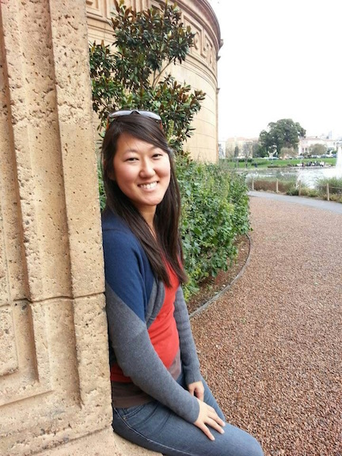

ABOUT JULIE
Hello there! I’m a web developer, graphic designer, and food tour entrepreneur, with experience in a number of other fields, including event and conference management, corporate team building, content writing and editing, marketing, photography, non-profit fundraising and grant management, and volunteer leadership and recruitment. My hobbies include travel, trying new food, ballet, volleyball, and watching re-runs of The Office (USA version).
I was born in New York and grew up on Long Island (yes, we say “on” rather than “in Long Island”). After receiving a bachelors degree in Human Development and a Masters in Public Administration, with a non-profit concentration, I served overseas through humanitarian and charitable organizations in Malaysia, Indonesia, and China -- with the bulk of my time overseas spent in Beijing. After five years in Asia, I moved back to the U.S. and most recently worked in donor stewardship and communications at Stanford Law School (from 2012 to 2015). I also founded a food tour business called Munchwalks / Silicon Valley Food Tours in 2014, and enjoy facilitating corporate food tours when the opportunity arises.
I’m currently enrolled in two front-end web developer and web design training courses (Skillcrush and Thinkful) to grow in areas such as JavaScript, jQuery, and UI design.
Thanks for stopping by!
